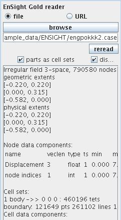
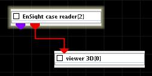
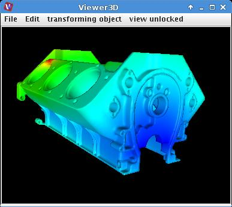

ENSIGHT CASE READER
The module reads EnSight case files.
Output data
At output there is an irregular 3-space field and a geometry object of the field.
Computation parameters

A radio button panel defines the source of the input data either from file or URL.
To select an input file click the browse button and select a file in the file browser or type the file name into the text input field below the button.
If parts as cell sets check box is on output data is devided into several cell sets according to defined parts of the data.
If display check box is on the geometry object is displayed in the viewer. To prevent the viewer from displaying it switch the box off before data is read.
After reading in data from the input file there appears some basic information about the data:
Presentation parameters
Presentation tab contents are described in the common interfaces section unter the Presentation Panel entry.
Example

Choose the EnSight case reader from the regular data readers library and move it into the work space. Read in …. file.
